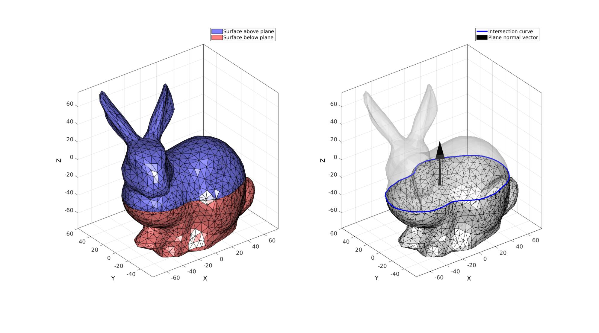
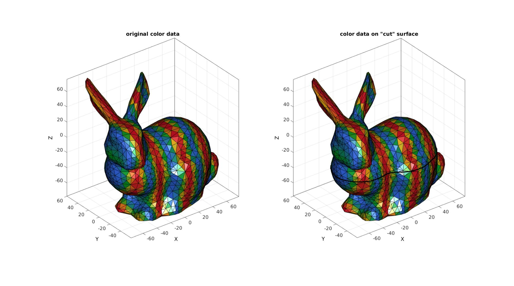
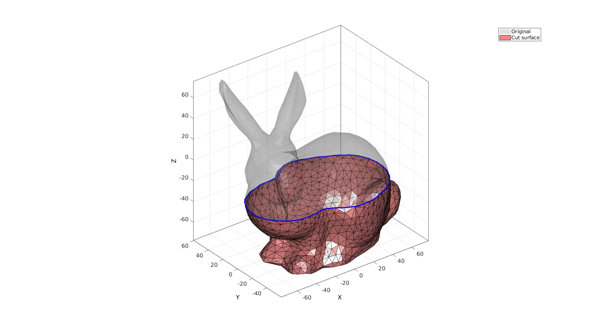
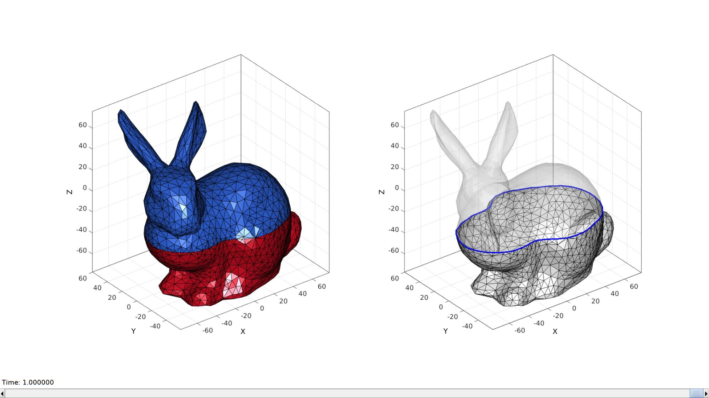
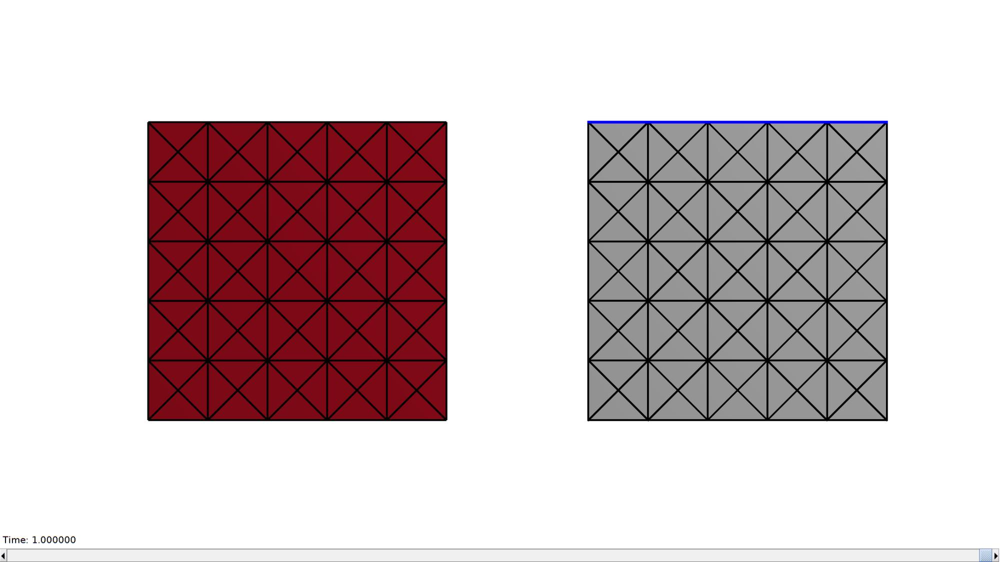
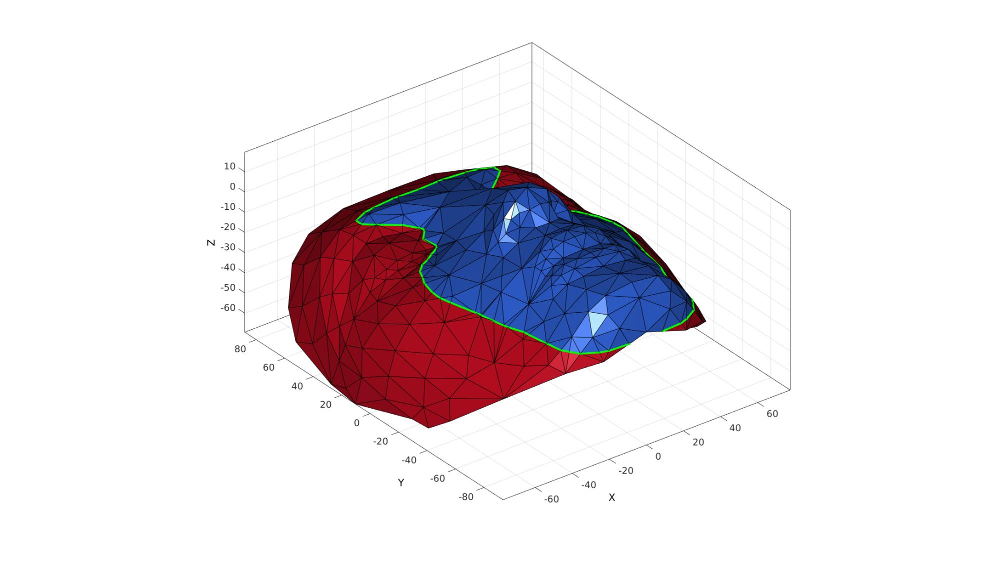

triSurfSlice
Below is a demonstration of the features of the triSurfSlice function
Contents
- Syntax
- Description
- Examples
- Example 1: Slicing a surface
- Example 2: Slicing while keeping track of surface color data
- Example 3: Slicing a surface and keeping one side
- Example 4: Demo animation for changing orientation
- Example 5: Demo animation illustrating "sharp triangle" problem
- Example 6: Cutting non-closed surfaces
clear; close all; clc;
Syntax
[F,V,C,logicSide,Eb]=triSurfSlice(F1,V1,C1,P,n,snapTolerance);
Description
This function slices the input mesh (defined by faces F, vertices V and optional color data C) using a plane specified by a point P and a normal vector to the plane n. Edges crossing the plane are cut at the plane, and new points are introduced at the intersection, and new triangles are created. Points within snapTolerance from the plane are snapped to the plane.
Examples
Plot settings
fontSize=15;
Example 1: Slicing a surface
Create example surface data consisting of faces F and vertices V
[F,V]=stanford_bunny; %Get faces and vertices C=[]; %No color data used in this example so left empty snapTolerance=mean(patchEdgeLengths(F,V))/100; n=vecnormalize([0 0 1]); %Normal direction to plane P=mean(V,1); %Point on plane %Slicing surface (note 3rd color data output is supressed) [Fc,Vc,~,logicSide,Eb]=triSurfSlice(F,V,C,P,n,snapTolerance);
Visualize slices mesh
cFigure; subplot(1,2,1); hold on; hp1=gpatch(Fc(~logicSide,:),Vc,'bw','k',1); hp2=gpatch(Fc(logicSide,:),Vc,'rw','k',1); legend([hp1 hp2],{'Surface above plane','Surface below plane'}) axisGeom; axis manual; camlight headligth; colormap gjet; set(gca,'FontSize',fontSize); subplot(1,2,2); hold on; gpatch(Fc(logicSide,:),Vc,'w','k',1); gpatch(Fc(~logicSide,:),Vc,'w','none',0.25); hp1=gpatch(Eb,Vc,'none','b',1,3); hp2=quiverVec(P,n,50,'k'); legend([hp1 hp2],{'Intersection curve','Plane normal vector'}) axisGeom; axis manual; camlight headligth; set(gca,'FontSize',fontSize); drawnow;
Example 2: Slicing while keeping track of surface color data
Create example surface data consisting of faces F, vertices V, and (optionally) color data C.
[F,V]=stanford_bunny; %Get faces and vertices %Create example color data FV=patchCentre(F,V)/5; %Face centre coordinates C=sin(FV(:,1)); %Optional surface color data to "keep hold off" snapTolerance=mean(patchEdgeLengths(F,V))/100; n=vecnormalize([0 0 1]); %Normal direction to plane P=mean(V,1); %Point on plane %Slicing surface [Fc,Vc,Cc,logicSide,Eb]=triSurfSlice(F,V,C,P,n,snapTolerance);
Visualize color data handling
cFigure; subplot(1,2,1); hold on; title('original color data'); gpatch(F,V,C,'k',1); axisGeom; axis manual; camlight headligth; set(gca,'FontSize',fontSize); colormap gjet; subplot(1,2,2); hold on; title('color data on "cut" surface'); gpatch(Fc,Vc,Cc,'k',1); gpatch(Eb,Vc,'none','k',1,3); axisGeom; axis manual; camlight headligth; set(gca,'FontSize',fontSize); drawnow;
Example 3: Slicing a surface and keeping one side
Create example surface data consisting of faces F, vertices V
[F,V]=stanford_bunny; %Get faces and vertices snapTolerance=mean(patchEdgeLengths(F,V))/100; n=vecnormalize([0 0 1]); %Normal direction to plane P=mean(V,1); %Point on plane %Slicing surface [Fc,Vc,Cc,logicSide,Eb]=triSurfSlice(F,V,[],P,n,snapTolerance); %Keep only part under plane and clean up [Fcc,Vcc,indFix]=patchCleanUnused(Fc(logicSide,:),Vc); Eb_cc=indFix(Eb);
Visualize slices mesh
cFigure; hold on; hp1=gpatch(F,V,'kw','none',0.25); hp2=gpatch(Fcc,Vcc,'rw','k',1); gpatch(Eb_cc,Vcc,'none','b',1,3); legend([hp1 hp2],{'Original','Cut surface'}) axisGeom; axis manual; camlight headligth; colormap gjet; set(gca,'FontSize',fontSize); drawnow;
Example 4: Demo animation for changing orientation
Visualizing slicing operation for varying angles
hf=cFigure; subplot(1,2,1); hold on; hp4=gpatch(Fc,Vc,logicSide,'k',1); axisGeom; axis manual; camlight headligth; colormap gjet; subplot(1,2,2); hold on; hp1=gpatch(Fc(logicSide,:),Vc,'w','k',1); hp2=gpatch(Fc(~logicSide,:),Vc,'w','none',0.25); hp3=gpatch(Eb,Vc,'none','b',1,3); axisGeom; axis manual; camlight headligth; drawnow; nSteps=50; %Number of animation steps %Create the time vector animStruct.Time=linspace(0,1,nSteps); %The vector lengths a=linspace(0,2*pi,nSteps); b=linspace(0,2*pi,nSteps); for q=1:1:nSteps R=euler2DCM([a(q) b(q) 0]); nn=n*R; [Fc,Vc,~,logicSide,Eb]=triSurfSlice(F,V,C,P,nn,snapTolerance); %Set entries in animation structure animStruct.Handles{q}=[hp1 hp1 hp2 hp2 hp3 hp3 hp4 hp4 hp4]; %Handles of objects to animate animStruct.Props{q}={'Vertices','Faces',... 'Vertices','Faces',... 'Vertices','Faces',... 'Vertices','Faces','CData'... }; %Properties of objects to animate animStruct.Set{q}={Vc,Fc(logicSide,:),Vc,Fc(~logicSide,:),Vc,Eb,Vc,Fc,double(logicSide)}; %Property values for to set in order to animate end anim8(hf,animStruct);
Example 5: Demo animation illustrating "sharp triangle" problem
[F,V]=quadBox([1 1 1],[5 5 5]); [F,V]=quad2tri(F,V,'x'); FV=patchCentre(F,V)/5; C=sin(FV(:,1))+sin(FV(:,2))+sin(FV(:,3)); snapTolerance=mean(patchEdgeLengths(F,V))/50; %Snapping tolerance n=vecnormalize([0 0 1]); %Plane normal vector P=mean(V,1); %Point on plane [Fc,Vc,Cc,logicSide]=triSurfSlice(F,V,C,P,n,snapTolerance); Eb=patchBoundary(Fc(logicSide,:),Vc);
Visualizing slicing operation and sharp triangles. Animate this figure to view effect.
hf=cFigure; subplot(1,2,1); hold on; hp4=gpatch(Fc,Vc,logicSide,'k',1,3); axisGeom; axis manual; camlight headligth; colormap gjet; axis off; view(-90,0); zoom(1.25); subplot(1,2,2); hold on; hp1=gpatch(Fc(logicSide,:),Vc,'w','k',1,3); hp2=gpatch(Fc(~logicSide,:),Vc,'w','none',0.25); hp3=gpatch(Eb,Vc,'none','b',1,4); axisGeom; axis manual; camlight headligth; view(-90,0); zoom(1.25);axis off; drawnow; nSteps=75; %Number of animation steps animStruct.Time=linspace(0,1,nSteps); %Create the time vector z=linspace(min(V(:,3)),max(V(:,3)),nSteps); for q=1:1:nSteps P=[0 0 z(q)]; [Fc,Vc,~,logicSide,Eb]=triSurfSlice(F,V,C,P,n,snapTolerance); %Set entries in animation structure animStruct.Handles{q}=[hp1 hp1 hp2 hp2 hp3 hp3 hp4 hp4 hp4]; %Handles of objects to animate animStruct.Props{q}={'Vertices','Faces',... 'Vertices','Faces',... 'Vertices','Faces',... 'Vertices','Faces','CData'... }; %Properties of objects to animate animStruct.Set{q}={Vc,Fc(logicSide,:),Vc,Fc(~logicSide,:),Vc,Eb,Vc,Fc,double(logicSide)}; %Property values for to set in order to animate end anim8(hf,animStruct);
Example 6: Cutting non-closed surfaces
[F,V]=graphicsModels(10); %Get faces and vertices snapTolerance=mean(patchEdgeLengths(F,V))/100; n=vecnormalize([0 0 1]); %Normal direction to plane P=mean(V,1); %Point on plane %Slicing surface [Fc,Vc,Cc,logicSide,Eb]=triSurfSlice(F,V,C,P,n,snapTolerance);
Visualize slices mesh
cFigure; hold on; gpatch(Fc,Vc,logicSide,'k',1); gpatch(Eb,Vc,'none','g',1,3); axisGeom; axis manual; camlight headligth; colormap gjet; set(gca,'FontSize',fontSize); drawnow;